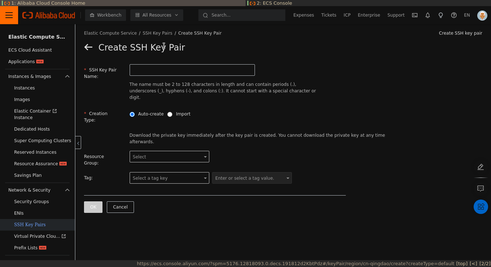

Linux Upskill Challenge: Day 0
Intro
blog ini merupakan bagian dari linux upskill challenge series. berisi catatan proses belajar saya dalam mengikuti panduan Linux Upskill Chalenge
Sudah 3 tahun saya bergelut dengan linux sejak tahun 2019 sampai sekarang, dari memepelajari GUI sampai CLI-nya, dari menjalankan desktop manager sampai window manager, dari ubuntu sampai Archlinux (yah walaupun saya tahu archlinux tidak benar-benar sesulit itu), perjalanan panjang saya sampai pada bash scripting. semua perjalanan itu benar-benar menyenangkan dan tanpa sadar menjadi minat saya dalam dunia pekerjaan, yah walaupun background pendidikan saya tidak berhubungan dengan itu.
Hari ini saya ingin meningkatkan keahlian saya dalam dunia linux, yah.. kalian pasti tahu menjadi sysadmin akronim dari System Adminstrator, bagi yang belum tahu, sysadmin singkatnya adalah seseorang yang bertanggung jawab untuk mengelola sistem, memelihara dan juga mengoperasikan sistem server.
dalam mencari sumber proses belajar saya yang notabene seorang otodidak, saya menemukan repo github yang menyediakan pembelajaran untuk memulai menjadi sysadmin, yaitu Linux Upskill Chalenge yang berisi 20 judul pembelajaran yang sebelumnya kursus linux server admin online berbayar - sekarang gratis untuk dipelajari. Let’s get started!
Day 0 : Creating Your Own Server
pertama-tama kita memasuki day 0, untuk menjadi admin server tentu kita harus mempunyai atau dapat mengakses server itu sendiri, diluar sana banyak penyedia server gratis selama 1 bulan sampai dengan 12 bulan, diantaranya AWS, Google Cloud, Alibaba Cloud, Azure, Oracle, IBM, dan masih banyak lagi. disini saya akan menggunakan Alibaba Cloud sebagai playground saya dalam mamasuki dunia sysadmin.
kenapa saya lebih memilih Alibaba cloud dibanding yang lain? karena Alibaba menyediakan alibaba educate yang diperuntukan untuk pelajar dalam mempelajari server ataupun alibaba cloud itu sendiri, benefit yang didapat ketika menggunakan alibaba educate adalah. (ini bukan endorse)
- anda dapat mengakses secara bebas cloud server yang disediakan, selama 1 tahun, dengan spesifikasi VM sebagai berikut.
- One core CPU
- Linux OS
- 1 Gb RAM (Random Access Memory)
- 40 Gb Ultradisk
- 1 Mbps Bandwith yang dimana semua itu cukup untuk pembelajaran. (tidak direkomendasikan digunakan sebagai produksi)
- Trainning gratis dan sertifikat selama satu tahun
- tidak perlu credit card atau debit card
beruntung pelajar yang dari Indonesia, Alibaba menyediakan alibaba educate untuk region Indonesia yang setelah register berlaku satu tahun mulai dari oleh karena itu saya lebih memilih alibaba dari yang lain.
Register Alibaba Cloud
Persyaratan
Proses Registrasi Alibaba Cloud relatif mudah kita hanya memerlukan e-mail dan password, dan karena ini untuk pelajar, yang mana belum cukup umur untuk punya credit/debit card, maka kita tidak memerlukan credit card atau debit card sebaliknya kita perlu dokumen verifikasi yang berkaitan dengan instansi sekolah kita. contoh, kartu pelajar, kartu tanda mahasiswa atau bisa juga dengan lembar SKS.
Buat Akun Baru
- Klik link berikut untuk register ke Alibaba cloud register alibabacloud
- klik Sign Up Now dibawah form sign

- pilih individual account lalu next

- masukkan Email kamu dan buat Password klik Sign Up (Step 1 of 2)
- masukkan kode OTP yang dikirimkan via e-mail atau nomor handphone
- masukkan informasi tambahan kamu, perhatikan form yang bertanda
*, berarti kolom tersebut wajib diisi. setelah selesai kamu akan diarahkan ke halaman dashboard Alibaba Cloud.
- masuk ke menu dan cari Elastic Compute Service (ECS) klik create instance
- setelah terlihat seperti gambar dibawah, jangan ubah apapun kecuali kolom-kolom tertentu yang wajib diisi.

- ok sekarang kamu sudah punya server.
Buat SSH Key
Nah, sekarang kamu sudah punya server yang aktif selama satu tahun, saatnya terjun ke dalam server. Kita akan membuat pasangan kunci SSH
buka terminal mu, masukkan perintah:
ssh-keygen -t ed25519 -a 100
opsi
-tuntuk memilih type kunci
opsi-afungsi derivasi kunci (meningkatkan kekebalan terhadap pemecahan brute-force ketika kunci dicuri)
output yang dihasilkan akan seperti ini
$ ssh-keygen -t ed25519 -a 100
Generating public/private ed25519 key pair.
Enter file in which to save the key (/home/novores/.ssh/id_ed25519):
masukkan path lokasi kunci yang diinginkan (dengan mengisi absolute path). tekan enter langsung akan menyimpan key di directory /home/novores/.ssh/id_ed25519
pastikan kunci berhasil dibuat dengan mengecek ke dalam lokasi tempat disimpannya kunci. karena kita membuat kunci untuk menghubungkan antara remote machine
dengan local machine maka di dalam direktori tempat kunci, kamu akan melihat 2 pasang nama kunci, yang ada akhiran .pub dan yang
tidak ada akhirannya. nah yang akhirannya .pub inilah nanti kamu akan menggunakannya ke dalam remote machine, dengan mengcopy isi file ke dalam ECS console.
Memasukkan public key (.pub) ke dalam ECS Console
- masuk ke ecs console
- di sidebar sebelah kiri scroll ke bawah cari SSH Key Pairs dan klik

- pastikan di tab atas pilih region server yang telah di set sebelumnya, atau bisa dilihat di dashboard, dalam kasus saya Malaysia (Kuala Lumpur). Klik Create SSH Key Pair

- masukkan nama, di kolom creation type pilih import, lalu copy public key yang telah dibuat ke dalam kotak yang telah disediakan
- tekan
ok
Buat config
buat direktori config
cd .ssh
vim config
lalu tambahkan dan edit konfigurasi dibawah ke dalam file config
# Enter the alias of the ECS instance to connect to the instance by using an SSH key pair.
Host ecs
# Enter the public IP address of the instance.
HostName 121.196.**.**
# Enter the port number. The default port number is 22.
Port 22
# Enter the logon account.
User root
# Enter the address of the private key file on your PC.
IdentityFile ~/.ssh/id_ed25519
Masuk ke dalam server
dengan adanya config diatas maka akan memudahkan kita untuk masuk kedalam server, kita hanya tinggal mengetik perintah ssh beserta aliasnya saja (config diatas aliasnya adalah ecs)
ssh ecs
voila!! it’s time to be a sysadmin
di hari selanjutnya saya akan mencoba untuk menyelam ke dalam server dengan perintah-perintah dasar.